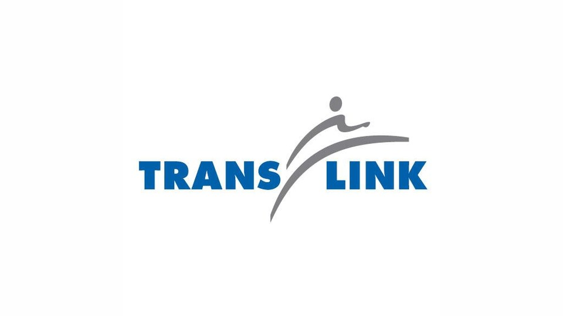

BusesAreUs

PRODUCT:
Bus Tracking Program
TECHNOLOGY:
Java, JUnit, Genymotion, Oracle VirtualBox
COMPANY:
Academic Project
DESCRIPTION:
Excluding all the intro "computer programs" with IDE console outputs, this was my first project showing me how the lines of code transformed into a program on a phone. The application was an academic Java project which tracks the location of all nearby buses through Vancouver's Translink API with JSON parsing. It was created on IntelliJ and simulated with Genymotion and Oracle VirtualBox. Archived Github upon request.